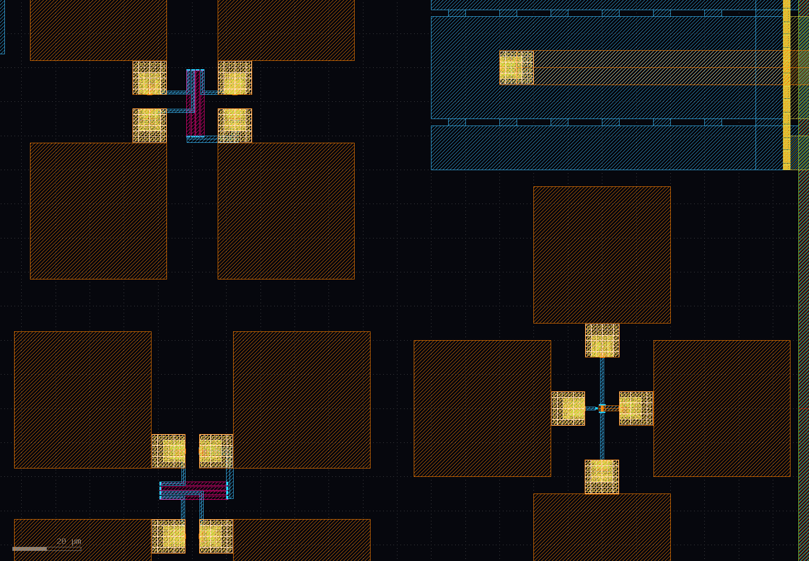

experiments
RPPD
there are 6 resistors aviable to measure: 3 in X and Y orientations and both versions as dummy and normal resistors
sg13g2
there is a fast BjT for measurments.
calibration kit
to measure the amplifier impedances and to see the effect of pads and wirebonding, there are an open, short and load calkit.